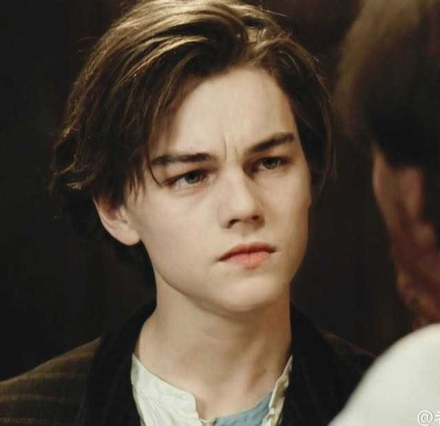

名字:
乔维里
性别:男

介绍:微博：乔维里c，一些碎碎念； 公众号：乔维里，一些文章。
问题
答案
新建于:2016-01-18 05:30:58 PM，更新于2016-01-18 05:30:58 PM
Pre上一页
Next下一页
跳页:
正文: 大概小时候都是这样，非常注重男女有别啊男女授受不亲啊之类的概念。
看到电视上尔康又跟紫薇打啵儿，吃着饭也要放下筷子赶快把眼睛捂起来。
那个时候我认为，男生，怎么可能跟女生一起玩呢？男生，怎么可能跟女生扯上关系呢？
男生就应该永永远远跟男生玩，男生跟女生是完全不同的两个物种，都不能互相看一眼的那种。
啧，小的时候我真是个孤傲的boy。
而那个时候，家里大人啊尤其是亲戚，最喜欢调戏小孩子。
“哟，今年都7岁了，找女朋友了吗！”
“快说，是不是喜欢你们班那个女班长？”
“长大了要不要找你们音乐老师那样的漂亮姑娘？或者像你小姨这样的？”
“诶！嘴巴这么红，跟谁亲嘴儿了？”
面对这些花花绿绿男男女女纷纷扰扰的挑衅。
七岁的我发出了跨时代的怒吼：
“呸呸呸！！最讨厌女生了！谁要找女朋友了！谁要亲嘴儿了！以后一辈子不找女朋友！一辈子不亲嘴儿！只跟男生玩儿！”
诶
一声叹息
Pre上一页
Next下一页
跳页: